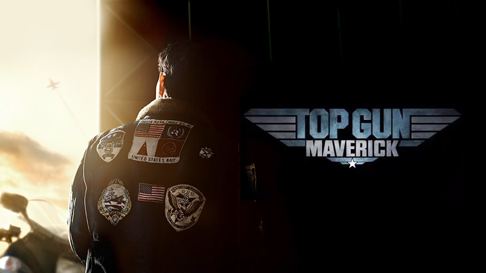
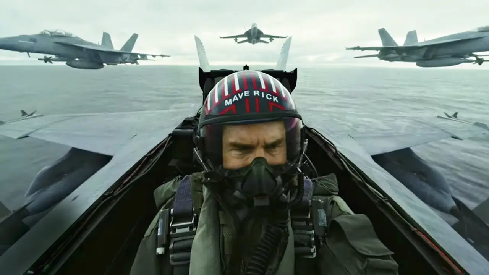

Na sequência de Top Gun: Ases Indomáveis, acompanhamos a história de Pete “Maverick” Mitchell (Tom Cruise), um piloto à moda antiga da Marinha que coleciona muitas condecorações, medalhas de combate e grande reconhecimento pela quantidade de aviões inimigos abatidos nos últimos 30 anos. Entretanto, nada disso foi suficiente para sua carreira decolar, visto que ele deixou de ser um capitão e tornou-se um instrutor. A explicação para esse declínio é simples: Ele continua sendo o mesmo piloto rebelde de sempre, que não hesita em romper os limites e desafiar a morte. Nesta nova aventura, Maverick precisa provar que o fator humano ainda é fundamental no mundo contemporâneo das guerras tecnológicas. Após 34 anos do clássico, acompanhem o filme do premiado produtor Jerry Bruckheimer e de Joseph Kosinski, mesmo diretor de Tron: O Legado (2010) e Oblivion (2013).
 Tom Cruise
Jennifer Connely
Miles Teller